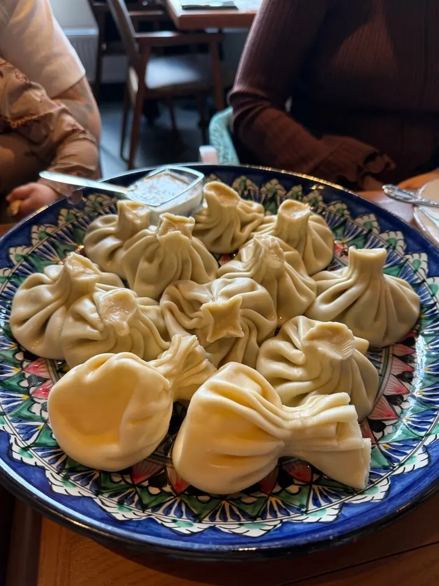
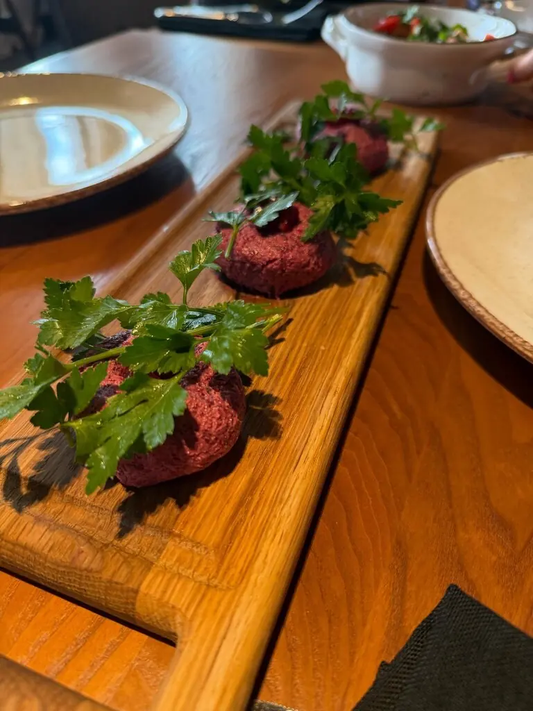
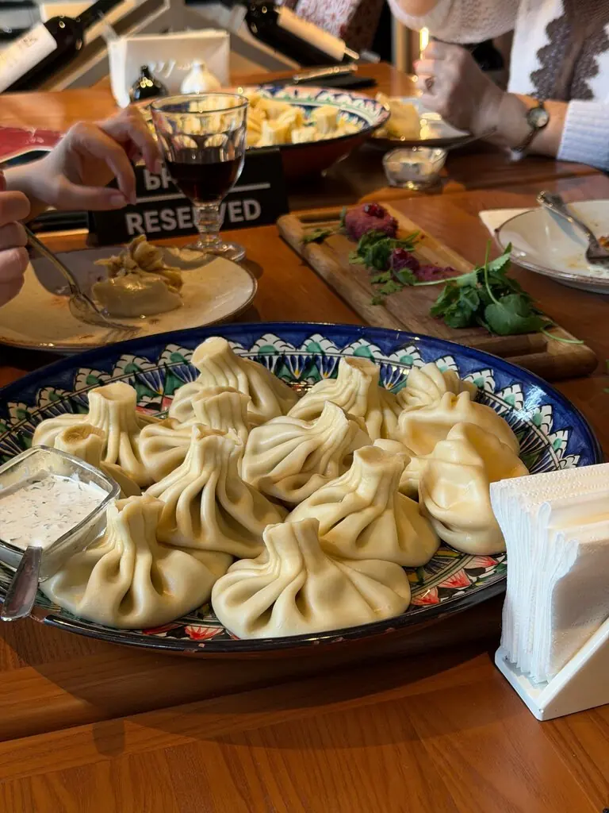
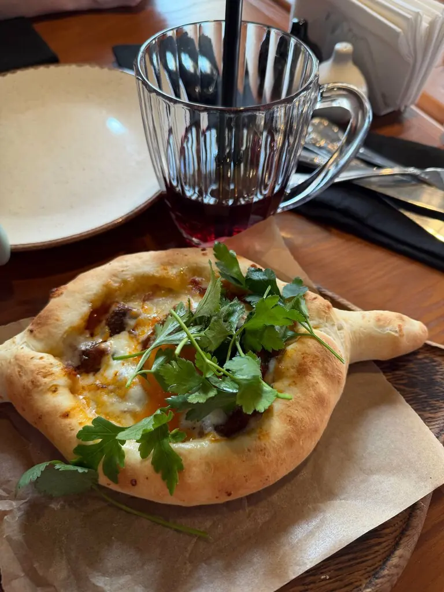
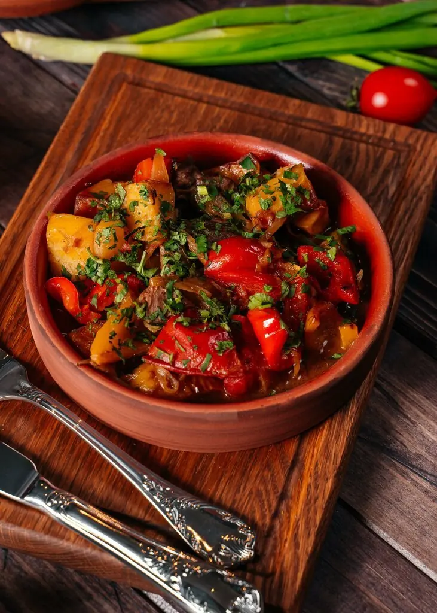
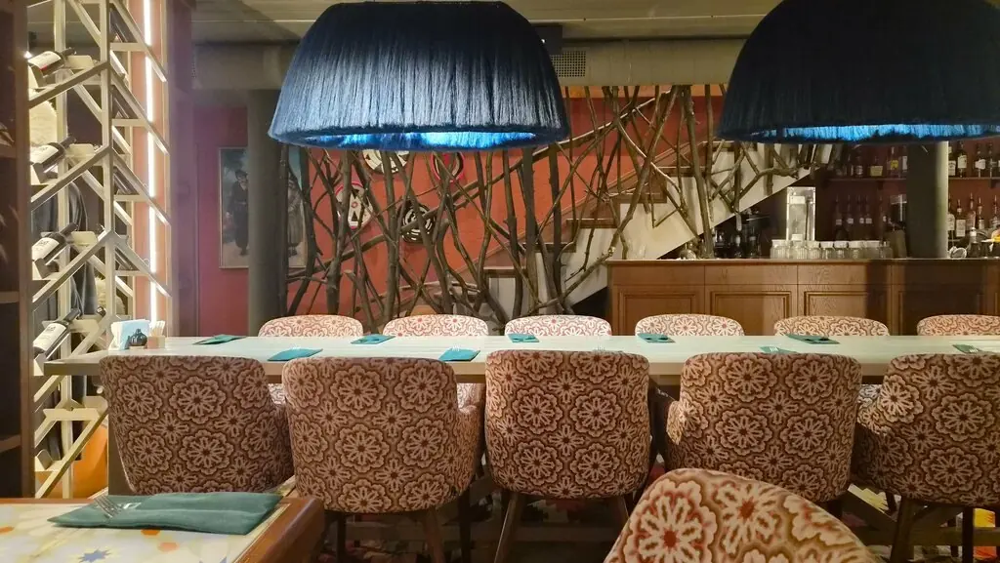

Рязань+7 910 507-01-44
Хинкали выпивали



1
Берём за хвостик
Хинкали едят руками. Вилка обидится, но переживёт.
4,9 · 569 оценок · можно с собакой
Не только хинкали
Аджапсандал590 ₽
Хачапури по-мегрельски740 ₽
Хачапури по-аджарски840 ₽
Кубдари с бараниной940 ₽
Ассорти домашних сыров990 ₽
Хачапури том-ям1 190 ₽
Часть меню с Яндекс Карт, цены уточняйте у официанта. Хинкали подают сетами разных вкусов.




Отзывы после третьего
Отличное место, всегда всё очень вкусно, продукты свежие, внимательный персонал. Хинкали с грибами просто любовь.Елена Елена
Великолепное место для отдыха. Отмечала там свой юбилей.Елена Евдокимова